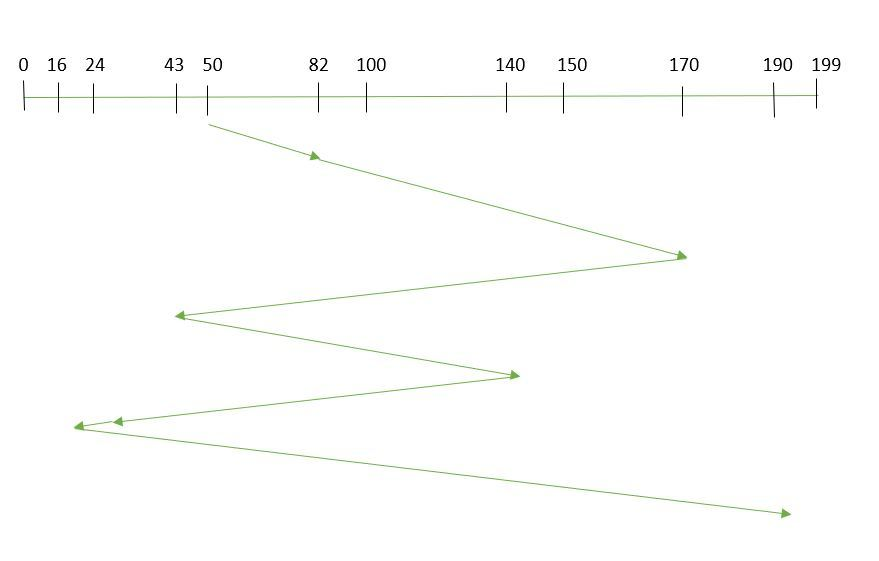

FCFS Disk Scheduling Algorithm
First come first serve (FCFS) scheduling algorithm simply schedules the jobs according to their arrival time. The job which comes first in the ready queue will get the CPU first. The lesser the arrival time of the job, the sooner will the job get the CPU. FCFS scheduling may cause the problem of starvation if the burst time of the first process is the longest among all the jobs.
Advantages of FCFS
1. Simple2. Easy
3. First come, First serve
Disadvantages of FCFS
1. The scheduling method is non preemptive, the process will run till its completion.2. Due to the non-preemptive nature of the algorithm, the problem of starvation may occur.
3. Although it is easy to implement, but it is poor in performance since the average waiting time is higher as compare to other scheduling algorithms.
Disk Scheduling
Disk scheduling is done by operating systems to schedule I/O requests arriving for the disk. Disk scheduling is also known as I/O scheduling.Disk scheduling is important because:
- Multiple I/O requests may arrive by different processes and only one I/O request can be served at a time by the disk controller. Thus other I/O requests need to wait in the waiting queue and need to be scheduled.
- Two or more request may be far from each other so can result in greater disk arm movement.
- Hard drives are one of the slowest parts of the computer system and thus need to be accessed in an efficient manner.
Important terms related to Disk Scheduling Algorithms
Seek Time: Seek time is the time taken to locate the disk arm to a specified track where the
data is to be read or write. So the disk scheduling algorithm that gives minimum average seek
time is better.
Rotational Latency: Rotational Latency is the time taken by the desired sector of disk to rotate
into a position so that it can access the read/write heads. So the disk scheduling algorithm
that gives minimum rotational latency is better.
Transfer Time: Transfer time is the time to transfer the data. It depends on the rotating speed
of the disk and number of bytes to be transferred.
Disk Access Time: Disk Access Time = Seek Time + Rotational Latency + Transfer Time
Disk Response Time: Response Time is the average of time spent by a request waiting to perform
its I/O operation. Average Response time is the response time of the all requests. Variance
Response Time is measure of how individual request are serviced with respect to average response
time. So the disk scheduling algorithm that gives minimum variance response time is better.

EXAMPLE:
Suppose the order of request is- (82,170,43,140,24,16,190)
And current position of Read/Write head is : 50

So, total seek time:
=(82-50)+(170-82)+(170-43)+(140-43)+(140-24)+(24-16)+(190-16)
=642